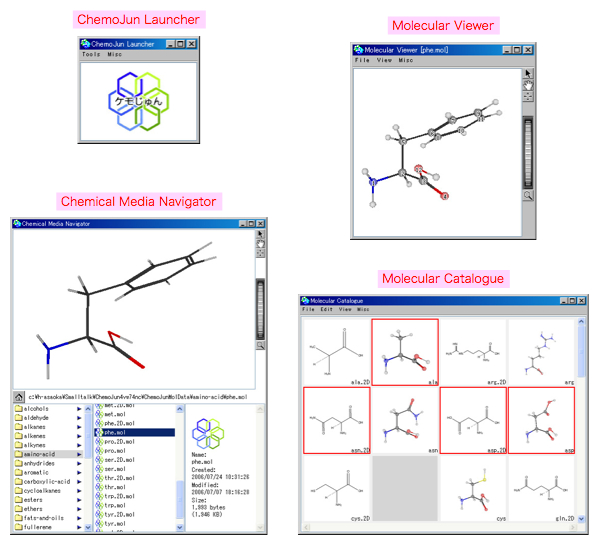

2006年08月08日 文責：浅岡 浩子
ケモじゅんで利用できる代表的なツールです。

ツールの画像の部分をクリックすると、各ツールの説明ページを開きます。
背景色がピンクの文字の部分をクリックすると、このページ内の説明箇所に飛びます。
各ツールを簡単に利用する場合の手順が書かれています。
初めて利用する場合に参考にすると良いでしょう。
システムをインストールすると、必ずランチャーが表示されているはずです。
ランチャーのメニューから様々なツールを開くことができます。
バージョンによっては、マニュアル通りに動作しないツールがあります。
バージョンを確認してください。
詳しい説明は、 ケモじゅんランチャー を参照してください。
分子ビューアで、簡単に分子を表示してみましょう。
ランチャーから、「Tools」 - 「Molecular Viewer - Select Data」メニューを選択します。
ダイアログでリストされるファイル名のなかから、選んでください。
※ ダイアログが表示されない場合は、設定などが間違っている可能性があります。
初期設定 を確認してみてください。
分子ビューアの「View」メニューの中から「Ball & Stick」などを選んで、分子の表示方法をいろいろ変えてみましょう。
ウィンドウの横にあるグラブボタン（）を利用して、分子オブジェクトをつかんで回してみましょう。
詳しい説明は、 分子ビューア を参照してください。
化学メディアナビゲータで、ローカルにある分子ファイルを選択して、次々に表示してみましょう。
ランチャーから、「Tools」 - 「Chemical Media Nabigator」メニューを選択します。
化学メディアナビゲータの下の部分で、ファイルを選択します。
すぐに上部のビューにファイルの内容が表示されます。
ビューの中でマウスを右クリックすると、ファイルに対応したメニューが表示されます。
分子ファイルを選択して、表示方法を変更してみましょう。
次に同種のファイルを選んでも、同じ表示方法になります。
次々に分子を表示する場合に、とても便利です。
詳しい説明は、 化学メディアナビゲータ を参照してください。
分子カタログで、分子を一覧表示してみましょう。
ランチャーから、「Tools」 - 「Molecular Catalogue - Select Data」メニューを選択します。
ダイアログでリストされるディレクトリ名のなかから、選んでください。
※ ダイアログが表示されない場合は、設定などが間違っている可能性があります。
初期設定 を確認してみてください。
指定したディレクトリの中にある分子ファイルを読み込む状況が表示されます。
分子ファイルのサムネイル（縮小画像）を一覧します。
サムネイル（縮小画像）をダブルクリックすると、分子ビューアが開きます。
分子ビューアで見る方向を変更して、カメラボタンを押すと、一覧で表示されているサムネイルが更新されます。
複数の分子ファイルを一度に確認したい場合に利用すると良いでしょう。
詳しい説明は、 分子カタログ を参照してください。
{kind=link}
{kind=link}
{kind=link}
{kind=link}
{kind=link}
{kind=link}
{kind=link}
{kind=link}
{kind=link}
{kind=link}
{kind=link}
{kind=link}
{kind=link}
{kind=link}
{kind=link}
{kind=link}
{kind=link}
{kind=link}
{kind=link}
{kind=link}
{kind=link}
{kind=link}